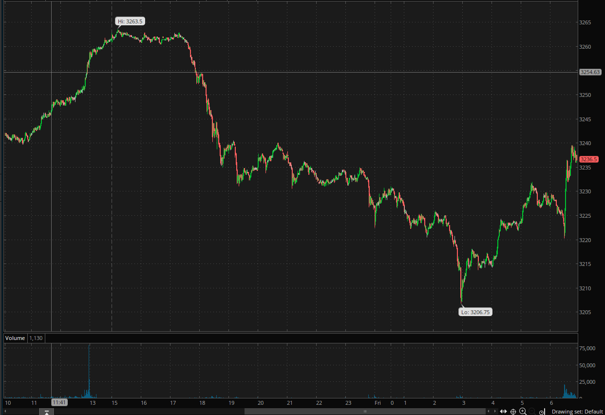
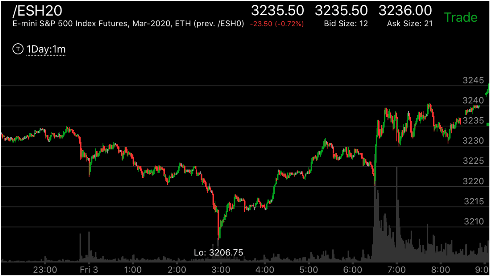
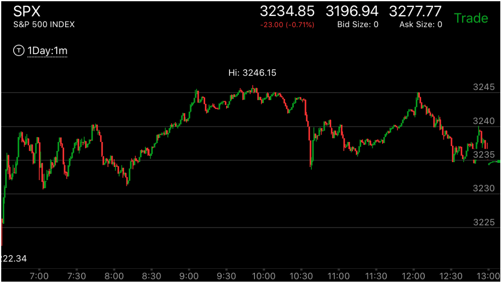
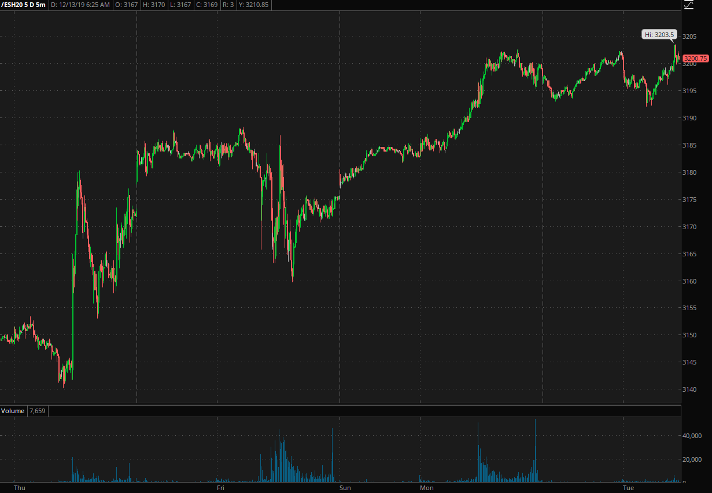
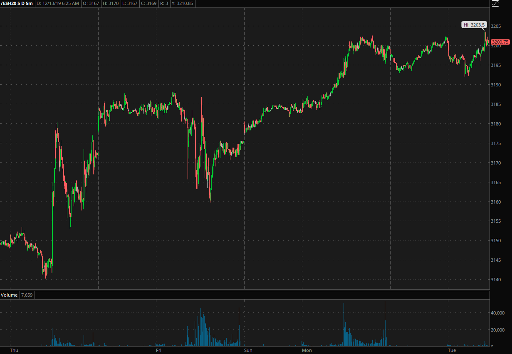

新极点附近走平相对弱势反转
- 缓慢的越过前面的范围后，出现了新极点。然后相对弱势，走平。这样就反转了
- 这个走势不一定要前面出现加速走势，有种可能是，前面出现了加速，然后继续前进，
走出了缓慢新极点。但是加速不是必要的。
- 如果没有加速，可能只要总的时间短于相反走势，就足够了。这个就是贯通走势。
也就是说，如果时间短于相反走势，那么只要相对弱势，就足以反转，不需要加速运动
- 如果在运动幅度很大，然后出现了走平，应该先平仓，然后观察，它通常会大幅拉回。甚至彻底反转。



图示：图一当中出现了第一浪，很强大。震荡很久后，图二FRI：00出现了第二浪，
然后拉回后，3：00继续前进。这个反转了FRI：00的浪。虽然没有反转真的第一浪。它反转后，运动速度很快。
几乎和下跌速度差不多，就超过了范围。图三中，它一开盘大幅上涨，这个应该是第二浪的加速浪。但是它没有立刻反转，
而是继续前进，然后在9：00出现了长时间走平的相对弱势后，反转。

图示：8:00新高后，下跌速度很快，而在底部运行后，在11：30再次新高，这次下跌速度比较慢。
这样就形成了下跌的相对弱势。大盘会下跌。

图示:不断创新高，8：00创新高后，立刻拉回，继续上涨，9：20的新高，
拉回速度比8；00要慢。这样就形成了反转，或者大幅回调。

图示：8：00新高后，立刻拉回，这个不是单线走势，因为它的上涨虽然很快，但是下跌也很快。
速度差不多。它后面创新高后，走平。这个才算反转走势。虽然新高比原来高点没有高很多。

图示：周一半夜，它冲高，拉回，再次冲高。幅度和速度都超过第一浪。立刻拉回。再次冲高
走平。这样它其实已经反转了。所以这个走平就可以反转了。
 

图示：图一：18:00在高处立刻拉回，但是拉回的时候，出现了两段走势，或者完成走势。然后一直在底部停留。
虽然它的相对位置很高，但是它对于高点来说，仍然很低。创新高3185后，它又是大幅快速拉回。这样它未来还会继续上涨。
图二：它从走平点大幅拉回后，仍然创了新高

图示：12：30创新高后，拉回，然后加速上涨。这个其实已经反转了。结果它在13：15创新高后，立刻拉回，
然后继续走低，然后加速下跌，虽然整个走势很小。但是已经造成了相对弱势。所以大盘继续上涨，直到它出现了合适的形状才反转。